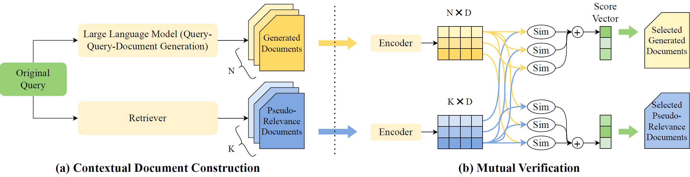

Query expansion, pivotal in search engines, enhances the representation of user information needs with additional terms. While existing methods expand queries using retrieved or generated contextual documents, each approach has notable limitations. Retrieval-based methods often fail to accurately capture search intent, particularly with brief or ambiguous queries. Generation-based methods, utilizing large language models (LLMs), generally lack corpus-specific knowledge and entail high fine-tuning costs. To address these gaps, we propose a novel zero-shot query expansion framework utilizing LLMs for mutual verification. Specifically, we first design a query-query-document generation method, leveraging LLMs' zero-shot reasoning ability to produce diverse sub-queries and corresponding documents. Then, a mutual verification process synergizes generated and retrieved documents for optimal expansion. Our proposed method is fully zero-shot, and extensive experiments on three public benchmark datasets are conducted to demonstrate its effectiveness over existing methods. Our code is available online at https://github.com/Applied-Machine-Learning-Lab/MILL to ease reproduction.

@misc{jia2023mill,
title={MILL: Mutual Verification with Large Language Models for Zero-Shot Query Expansion},
author={Pengyue Jia and Yiding Liu and Xiangyu Zhao and Xiaopeng Li and Changying Hao and Shuaiqiang Wang and Dawei Yin},
year={2023},
eprint={2310.19056},
archivePrefix={arXiv},
primaryClass={cs.IR}
}